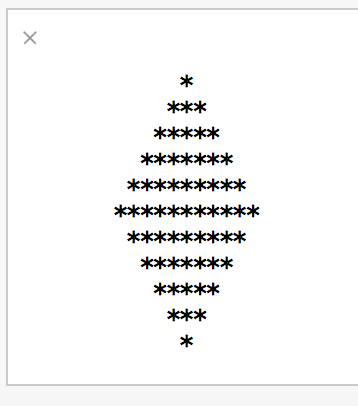
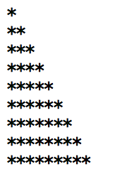

iOS App Development with Swift
Harvard Pre-College Program CSCI P-14600, Session II
Description
This course is an introduction to programming using Swift, Apple's new programming language for Macs and iOS devices. Through Swift, we explore the basics of programming and introduce fundamental computer science topics like abstraction, algorithms, basic data structures, and recursion. The course also features practical programming topics such as scripting, command line interfaces, application programming interfaces, debugging, integrated development environments, understanding documentation, and developing software both in isolation and as a team. By the end, each student designs and implements an app that can be deployed to iOS devices, like an iPhone or an iPad. Students must bring a MacBook Air or MacBook Pro running Mac OS10.10 or higher. You may also wish to bring an iOS device running iOS 7 or later to run your apps, but this is not required. No prior programming experience is assumed.
Schedule
This course is held during Session II of the 2015 Harvard Pre-College Program which runs from Monday, 13 July through Friday, 24 July. Class is held Monday through Friday from 8:30am to 11:30am in Pierce Hall 301.
Office Hours
Office hours begin Tuesday, 14 July. The below schedule is subject to change, depending on need and attendance.
| TF | Time | Location |
|---|---|---|
| Dino | 5-7pm | Annenberg |
| Cheng | 9-11pm | Inn |
Day 0
Monday, 13 July. Abstraction, algorithms, pseudocode, source code, compilation and interpretation. Basics of imperative programming with a block language including: statements, types, loops, boolean expressions, conditions, functions, arrays. Swift basics.
Homework Due
- Install OS X 10.10.4 and Xcode 6.4 for class
- Fill out pre-survey
- Sign up for a free Apple Developer Account (do not sign up for the $100 account!)
Source code
The Swift Basics code is available here.
Exercises for tomorrow
Begin with number 1, and work your way down. Complete at least 2 by class time tomorrow!
-
Temperature conversion. Create a new playground and save it as "Celsius". In this playground, write a few lines of code that converts a variable containing some degrees in Fahrenheit, called
f, to Celsius. And then implement the reverse, to convert back! Be sure to test your code. Below is a code fragment to get you started.
// YOUR NAME HERE
// you@email.com
//
// Fahrenheit converter
var f = 32
let Celsius = // your code here, using the `f` variable
var c = 10
let Fahrenheit = // your reverse code here-
Diamonds. In a new playground called
Diamond, generate a Diamond using Swift as shown below. Don't forget to open the console by opening the Assistant Editor in the following menu: View > Assistant Editor > Show Assistant Editor.

The input should be the number of lines. To get you started, begin with this:
// YOUR NAME HERE
// you@email.com
//
// Diamonds!
let NUM_LINES = 11
// for loops here Be sure to pay close attention to how many stars are on each line. Use for loops to create this design! You might first try creating pyramid shapes to get started:

Hint: you may need to use both the print() function (which prints out a string without going to a newline) and the println() function (which prints out a string and then prints a newline).
- Credit card verification. If you want to ramp up the challenge, attempt the following (only in the "Bad Credit" section) but in Swift, rather than C! Bad Credit
Note: Swift doesn't (easily) allow for input from standard in, so don't use the GetLongLong function (which doesn't exist anyway). Instead, just input it as a 64-bit int like so:
let card = 378282246310005Day 1
Tuesday, 14 July. Theory of computation, programming paradigms. Binary, ASCII. More Swift topics including data types, lists, and functions.
Homework Due
- Homework exercises from Day 0. If you have lots of prior experience, complete all 3. If less experience, complete at least 2.
Staff
 |
 |
 |
|---|---|---|
| Dan Armendariz | Cheng Gong | Dino Rodriguez |
| Instructor | Teaching Fellow | Teaching Fellow |
| Web, Instagram |